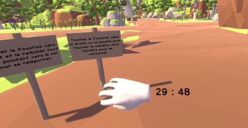
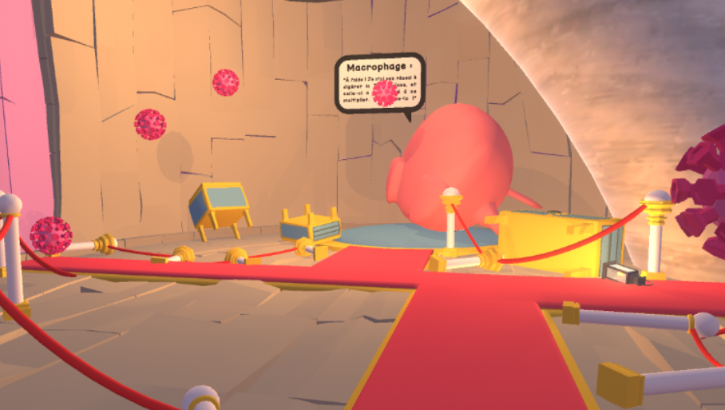
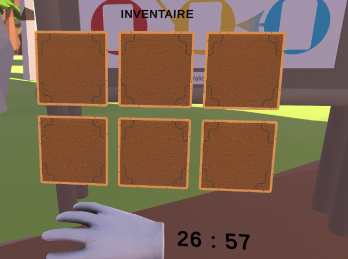
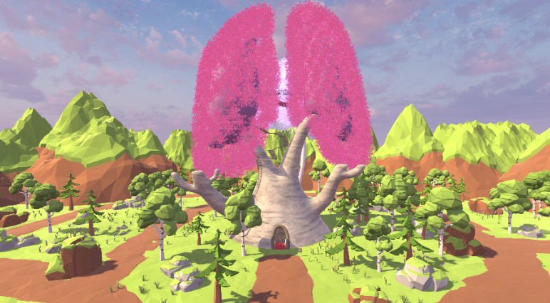
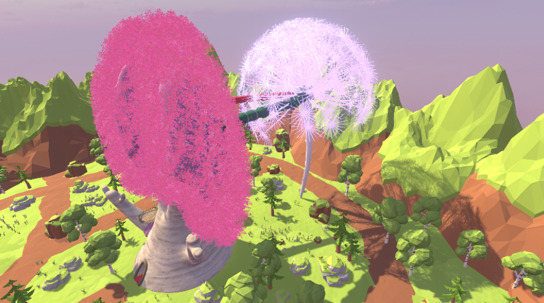
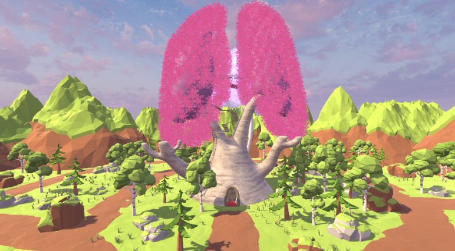
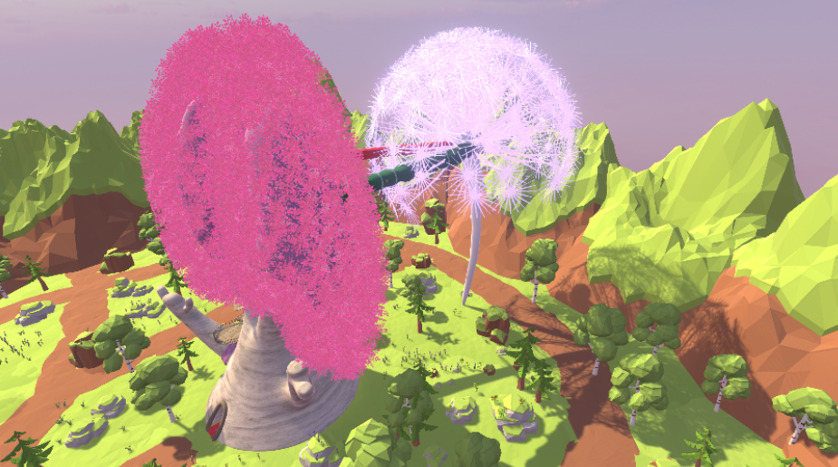

Immun Escape
Project introduction
Embark on a thrilling journey inside the human body with this VR Escape Game, themed around the battle against Tuberculosis. Players will step into the role of defenders of the lungs, identifying the disease, empowering the Macrophage to attack it, and retrieving the crucial interferon from the lymph nodes. Only by successfully arming the Macrophage can the players eradicate the disease and claim victory. Will you rise to the challenge and save the body? The clock is ticking!
My Role
Correct, improve, and optimize the mechanics already developed by the team to make the experience more immersive.
Gameplay mechanics
Final board:
The player must place 6 cards in the correct order on the board to
reproduce the 6 steps of the immune system's response to fighting the disease (events that reflect
the adventure the player has just experienced).

Timer :
The player has a timer on their wrist, allowing them to see the
remaining time in real-time.

Fight :
The player must use the magic wand (interferon) to shoot at the
bacteria that have multiplied because the macrophage failed to properly digest the bacteria.

Inventory :
Allows the player to store items needed for the next stages of the
game. Items dropped by the player can be automatically added to the inventory.

Tools and Technologies
Unity : Main game engine, used to integrate VR features and create gameplay
interactions.
C# : For programming the mechanics of puzzles and interactions.
Oculus Quest 2 : VR headset used as the main platform for the game, providing an
immersive virtual reality experience.
Discord : Team communication to coordinate the technical and creative aspects of the
project.
Github : Version control platform used to manage and collaborate on the project's
codebase, allowing team members to track changes, fix issues, and ensure code stability throughout
development.
 


